01How to read the sweeps
Every GIF is one 2×3 panel animation of the whole episode (30 fps source, 10 fps playback; stride 3 = real time, larger strides are labelled in the header). Hand search: both objects at Nobj = 4096 points each; panels Nhand = 128, 256, 512, 1024, 2048, 4096 per hand. Object search: both hands at Nhand = 4096 each; panels Nobj = 128 … 4096 per object. Same camera (elev 22°, azim −60°) and the same bounding box (union of the episode, all entities) in all six panels and in all three GIFs of a task. Colours: right hand ■ green, left hand ■ purple (one flat hue per hand, identical for human and Sharpa), tool ■ orange, target ■ amber. Marker size shrinks with N so that dense budgets do not merge into a blob. Both hands appear in every panel.
02Tasks — hand search (human), hand search (Sharpa), object search (human)
5 TACO triplets (verb · tool · target), 5 different verbs, 10 different objects, both hands active in every sequence (parquet contact labels active in 62–89 % of frames per hand; wrist travel ≥ 7.7 cm). Per task, top to bottom: hand search with the human MANO hands, hand search with the Sharpa Wave hands, object search with the human hands at full budget.
20231102_070 hit · hammer · toy
TACO (hit, hammer, toy)/20231102_070 · 161 frames @ 30 fps (5.4 s) · stride 3 → 54 frames at 10 fps (1.0× real time) · tool mesh 139 (33.8×13.1×3.2 cm) · target mesh 081 (16.8×5.4×7.0 cm) · box 53 cm
hand search · human MANO hands
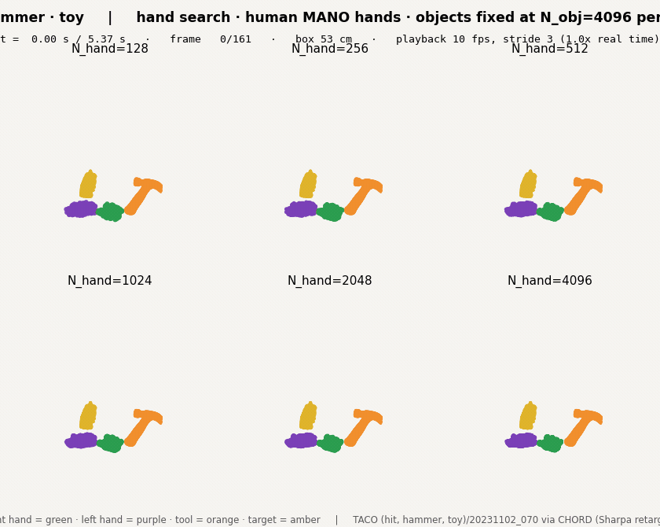
{kind=link}
hand search · Sharpa Wave hands
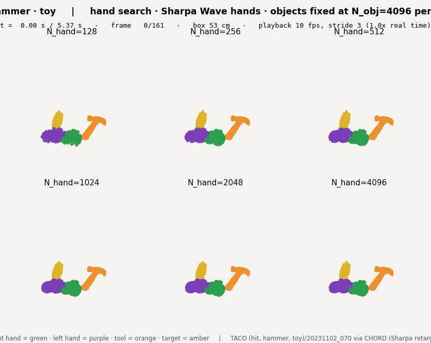
{kind=link}
object search · human MANO hands
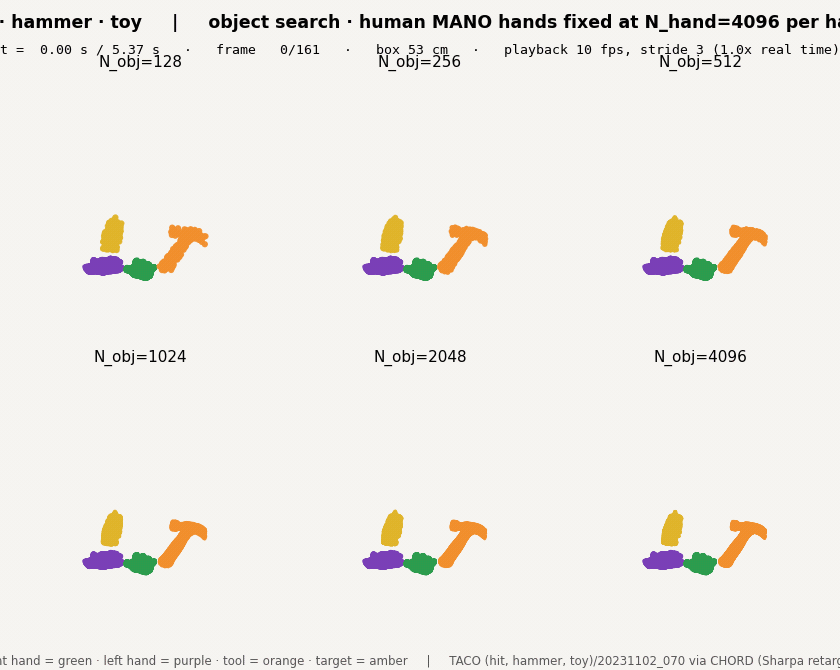
{kind=link}
20231013_085 cut · knife · plate
TACO (cut, knife, plate)/20231013_085 · 187 frames @ 30 fps (6.2 s) · stride 4 → 47 frames at 10 fps (1.33× real time) · tool mesh 073 (23.8×2.4×1.6 cm) · target mesh 166 (24.3×24.3×2.3 cm) · box 61 cm
hand search · human MANO hands
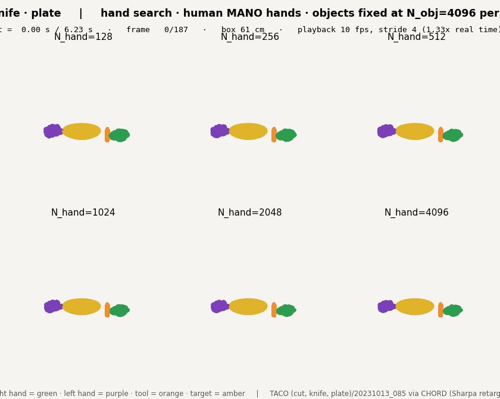
{kind=link}
hand search · Sharpa Wave hands
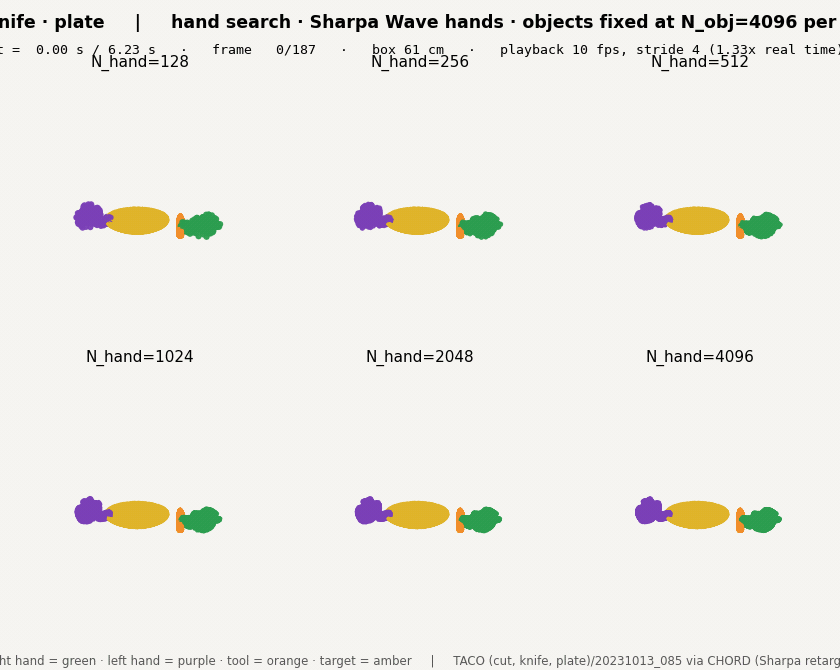
{kind=link}
object search · human MANO hands
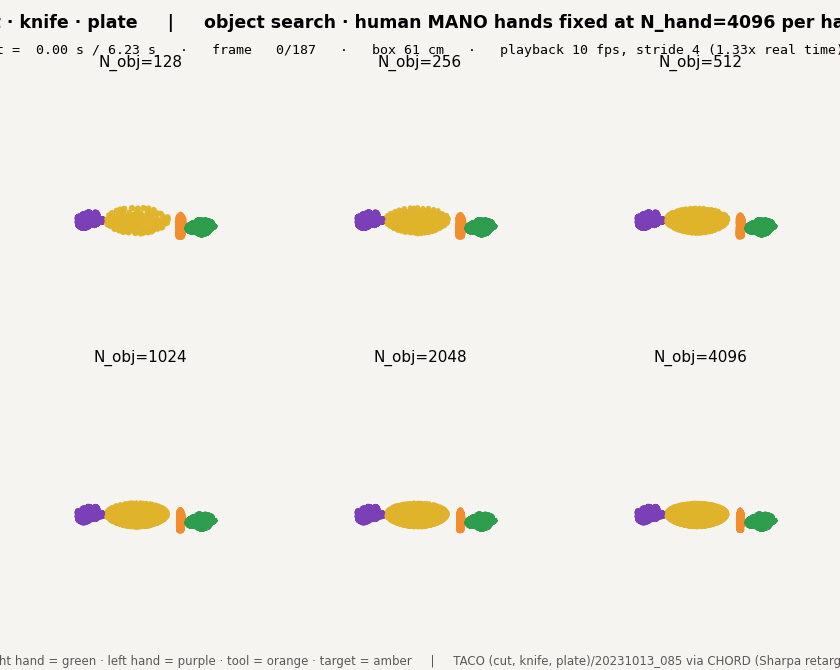
{kind=link}
20231019_001 pour in some · kettle · bowl
TACO (pour in some, kettle, bowl)/20231019_001 · 125 frames @ 30 fps (4.2 s) · stride 3 → 42 frames at 10 fps (1.0× real time) · tool mesh 199 (19.1×13.2×18.2 cm) · target mesh 190 (13.9×13.9×5.0 cm) · box 56 cm
hand search · human MANO hands
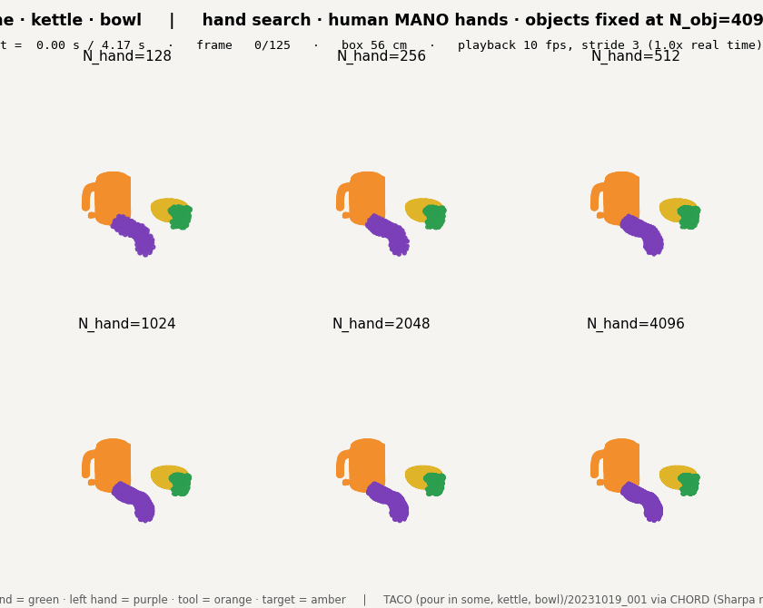
{kind=link}
hand search · Sharpa Wave hands
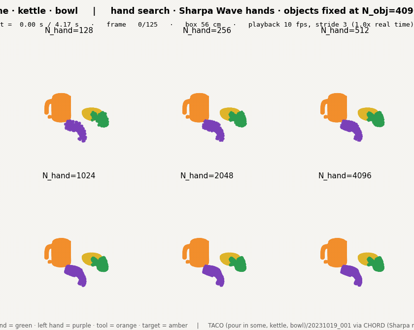
{kind=link}
object search · human MANO hands
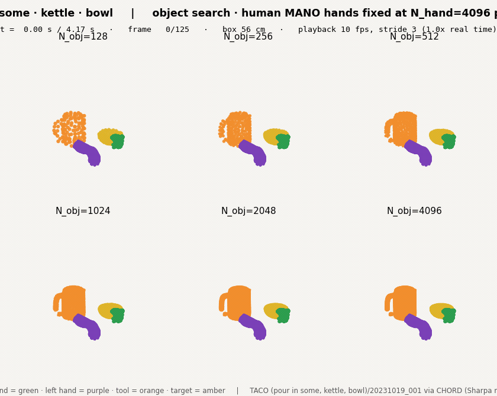
{kind=link}
20231104_004 dust · roller · box
TACO (dust, roller, box)/20231104_004 · 117 frames @ 30 fps (3.9 s) · stride 3 → 39 frames at 10 fps (1.0× real time) · tool mesh 076 (18.1×13.3×5.0 cm) · target mesh 087 (17.9×12.4×8.2 cm) · box 50 cm
hand search · human MANO hands
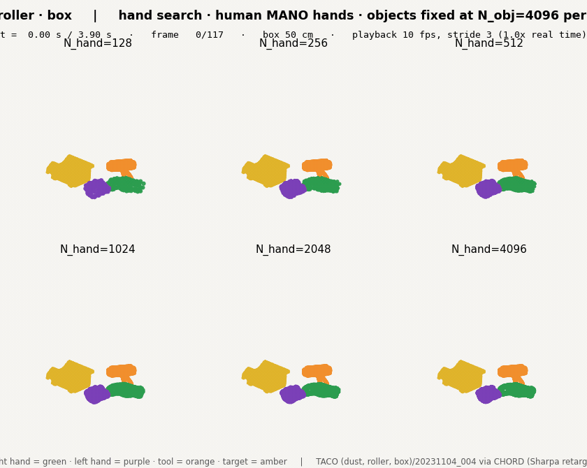
{kind=link}
hand search · Sharpa Wave hands
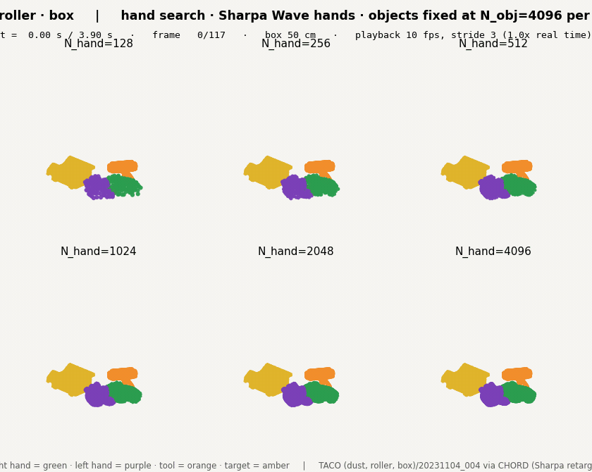
{kind=link}
object search · human MANO hands
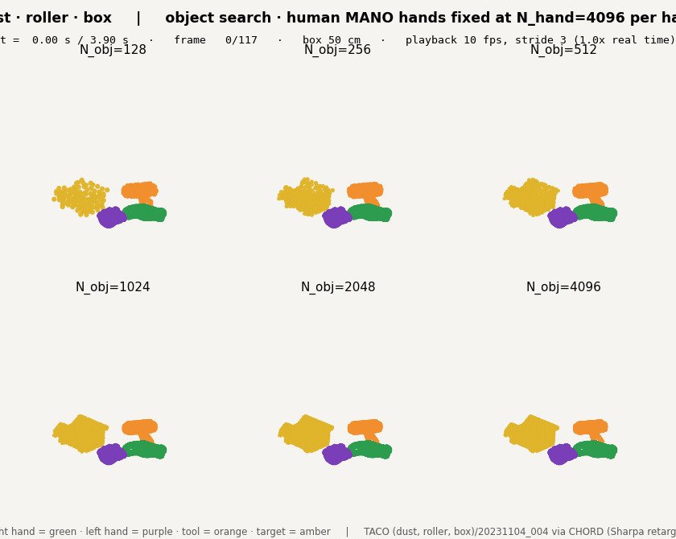
{kind=link}
20230927_040 empty · teapot · cup
TACO (empty, teapot, cup)/20230927_040 · 227 frames @ 30 fps (7.6 s) · stride 4 → 57 frames at 10 fps (1.33× real time) · tool mesh 088 (12.7×9.3×5.6 cm) · target mesh 007 (6.2×6.5×13.2 cm) · box 52 cm
hand search · human MANO hands
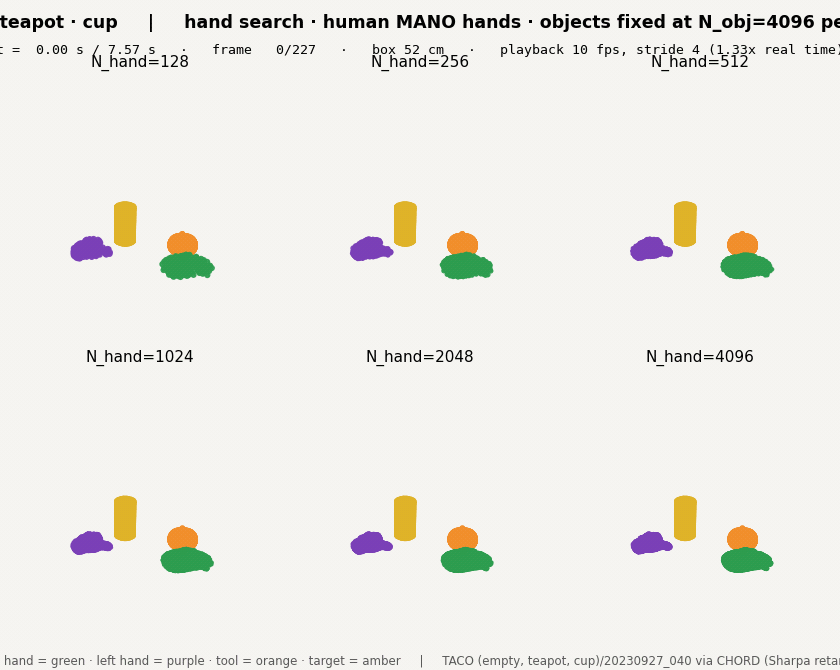
{kind=link}
hand search · Sharpa Wave hands
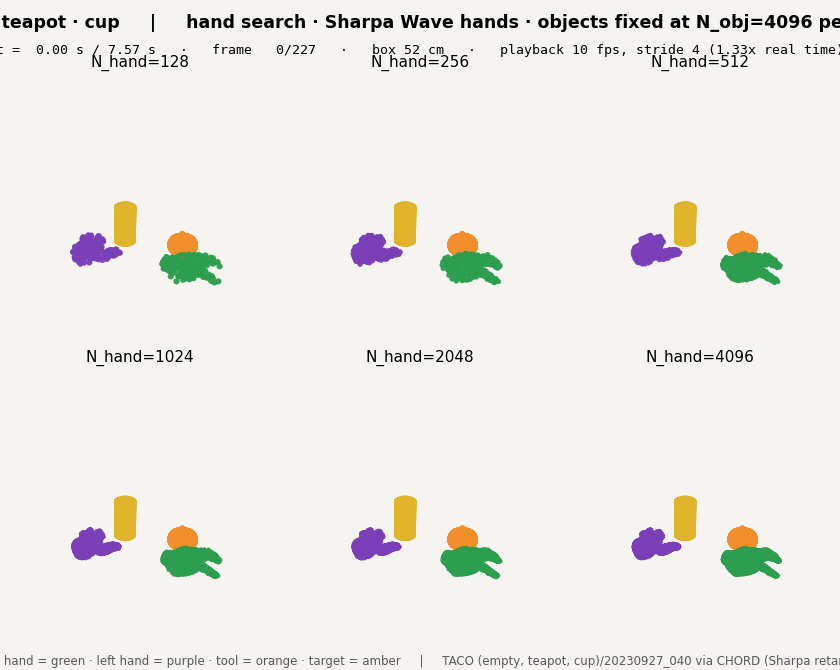
{kind=link}
object search · human MANO hands
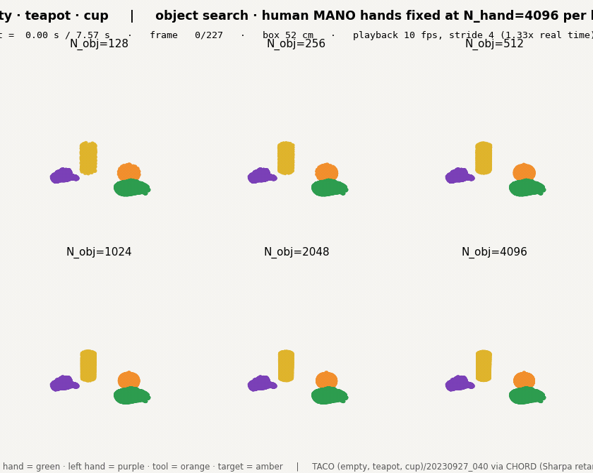
{kind=link}
03Setup
| Component | Value |
|---|---|
| Data | HF dataset nvidia/video-to-data-robot-dexterity-task-library-and-dataset (ungated, CC-BY-4.0) → taco/<seq>/motion_v1.parquet (1 row = whole sequence, 62 columns: MANO both hands + Sharpa Wave both hands + 2 rigid objects, 30 fps) · object meshes NNN_cm.obj from the official TACO Object_Models release (Dropbox, 424 MB zip; 10 meshes extracted) · CHORD-adapted Sharpa Wave URDFs nv_robotic_grounding_src/…/assets/urdfs/sharpawave/{right,left}_sharpa_wave.urdf |
| Human hands | manotorch ManoLayer(use_pca=False, flat_hand_mean=True, center_idx=0) — the same call CHORD's read_mano.py makes; pose = [global_orient(3), finger_pose(45)], betas from the parquet (per hand), verts = layer(pose, betas).verts + trans (wrist joint = trans) · closed-wrist faces (1538) · template for sampling = zero pose with the same betas |
| Sharpa hands | robot_{right,left}_frames (T, 67, 7) = world-frame [x y z qw qx qy qz] of pinocchio frames (universe, root_joint, 23 body frames named as the URDF links, joint frames, retarget sites). Each URDF link's visual STL is placed directly by its named body frame; the 10 fixed-joint children without a frame (*_elastomer, *_fingertip) are chained through the URDF fixed-joint origin. Template for sampling = all joints 0, root at identity (yourdfpy FK). Fixed link order → fixed topology → tracked points |
| Objects | V_world = R(object_body_wxyz) · (0.01 · V_cm) + object_body_position, per body in object_body_names = [tool, target]; ids from object_mesh_paths |
| Sampler | pointsample.py unchanged from v1: area-weighted 20·N dense sample (rng seed 0, fresh per call) → farthest-point sampling to N (start = farthest from centroid) → (face_id, barycentric) spec evaluated per frame · N ∈ {128, 256, 512, 1024, 2048, 4096} per hand / per object · one spec per (entity, N), saved as .npz |
| Labels | class_id 0 object / 1 human hand / 2 robot hand · instance_id 0 tool, 1 right hand, 2 left hand, 3 target · part_id = MANO 16-part skinning argmax (human) / URDF link index (Sharpa) / 0 (object) |
| Frames | stride = max(3, ceil(T/60)) over the whole episode → 39–57 frames per GIF at 10 fps playback |
| Render | matplotlib Agg 3D scatter, one scatter per panel (per-point depth order), 840×670 px figure, 2×3 panels ≈ 280 px each, light neutral background · ffmpeg palettegen/paletteuse (bayer dither, ≤ 128 colours) → GIF ≤ 3 MB each (fallbacks: fewer frames → fewer colours → narrower; none needed) · poster jpg = first frame |
04Data facts surfaced (not judgments of the pictures)
- !HF release has two parquet variants.The 360 top-level
taco_*dirs are a subset of the 1,215 undertaco/. Top-levelbrush-verb sequences carry 62 columns (MANO + Sharpa + objects); the 62 top-level sequences of every other verb carry only 34 (Sharpa + objects, no MANO). The 855 sequences that exist only undertaco/carry MANO (49/53 probed footers; the 4 misses were top-level duplicates). The five tasks here were taken from that set. - ·Sharpa frames are world-frame poses, body frames = URDF link frames.Established from the schema README ("World frame for wrist and object body poses"), from the frame list (frame 0 =
universeat the origin,right_hand_C_MC= the wrist pose exactly) and mechanically: yourdfpy FK of (wrist pose, 22 joint angles) on the CHORD URDF matches the parquet's 23 body frames to < 0.001 mm / < 0.001° max over all tasks and frames. No FK is needed to place the meshes. - ·MANO convention reproduced.The parquet's
mano_*_jointsare reproduced to < 0.001 mm (16 kinematic joints, both hands, all tasks) by manotorch withflat_hand_mean=True, center_idx=0and the stored betas;mano_flat_hand_mean=True,mano_center_idx=0are also stored in the file. In smplx terms this isvertices − joints[0] + trans, i.e. the wrist joint sits attrans. - ·MANO hand-mean convention (v1, GRAB).GRAB's stored
fullposeis reproduced from its PCA-24 params only withflat_hand_mean=True; smplx's default (False) adds the hand mean twice and lands 71 mm off. ManipTrans'main/dataset/grab_full_dataset_dexhand.py:83uses the default. Still relevant to the retargeter campaign that ran on it. - ·TACO meshes are in centimetres.
NNN_cm.obj× 0.01 (CHORD loader:vertex_scale=0.01); the HF task library ships no object assets, only the parquet and the LeRobot chunks. - ·Not established: the world frame's up axis.Neither the TACO README nor the CHORD loader documents it (no ground alignment in the loader). The camera assumes z-up (hands sit at z ≈ 0.6 m); it only changes the viewing angle, identically in all panels.
05Next
- ·Owner picks Nobj, Nhand from §02.Specs are saved per (entity, N); a larger stored budget can be trimmed by FPS-order prefix without resampling.
- ·Item 1.1 dataset decision (with owner).TACO via CHORD is the only source with released Sharpa pairs; the inventory covers GRAB / ARCTIC / OakInk2 / HOT3D as well.
- ·Item 1.3 preprocessingruns the same sampler over the chosen datasets at the chosen budget; the MANO-less top-level parquets must be avoided (or paired with TACO's own Hand_Poses).
06Artifacts & repro
- ·Code/sjw_alinlab2/home/beomjun/3d-wam/viz/{taco_sweeps.py, pointsample.py} · README_v2.md (env, commands, schema, conventions, GIF specs, task table)
- ·Outputs/sjw_alinlab2/home/beomjun/3d-wam/viz/out_v2/<task>/{handsearch_human, handsearch_sharpa, objsearch_human}.{gif,jpg} · spec_{hand_human,hand_sharpa}_{right,left}_N.npz · spec_obj_{tool,target}_N.npz · meta.json
- ·Data/virtual_lab/sjw_alinlab/beomjun/3d-wam/data/taco/{hf/taco/<seq>/motion_v1.parquet, Object_Models.zip, object_models_released/NNN_cm.obj}
- ·Verificationtaco_sweeps.py --verify: 5/5 tasks OK · 180/180 specs bit-exact · all GIFs ≤ 840 px wide, ≤ 3 MB, total 6.2 MB · logs/v2_verify.log
- ·v1 (superseded)out/ (GRAB grids, overviews, clips, Sharpa canonical) kept on disk; removed from this page
conda activate 3dwam && cd ~/3d-wam/viz # on a Slurm node (login node is memory-capped)
python taco_sweeps.py --download --select # 5 parquets via hf_hub_download + 10 TACO meshes; both-hands-active table
python taco_sweeps.py --check # conventions: MANO joints vs parquet, Sharpa frames vs yourdfpy FK
python taco_sweeps.py --run # sample + render + encode the 15 GIFs
python taco_sweeps.py --verify # mechanical checks + bit-exact spec re-run07Timeline
-
2026-08-25
v1 — GRAB, 4×4 grids, N ≤ 1024, Sharpa canonical only (superseded)
10 GRAB right-hand demos × 16 (Nhand, Nobj) budgets as static grids at the grasp frame, 512/512 flow clips, 16 cross-demo overviews, Sharpa Wave URDF sampled at the canonical pose. Object blue, hand coloured by MANO part. Superseded the same day: grids overflowed the content width, hand/object colours were hard to tell apart, no robot motion. Files kept on disk under viz/out/.
-
2026-08-25
v2 — TACO + Sharpa from CHORD, GIF sweeps, N ≤ 4096
Switched to CHORD's TACO release (MANO + Sharpa Wave + tool/target in one parquet), both hands, 5 tasks. Two sweeps rendered as whole-episode GIFs (2×3 panels, ≤ 840 px), flat per-hand colours (green R, purple L) vs warm objects (orange tool, amber target). Conventions established from schema/code and checked mechanically; 15 GIFs, 180/180 specs bit-exact. Owner's pick pending.